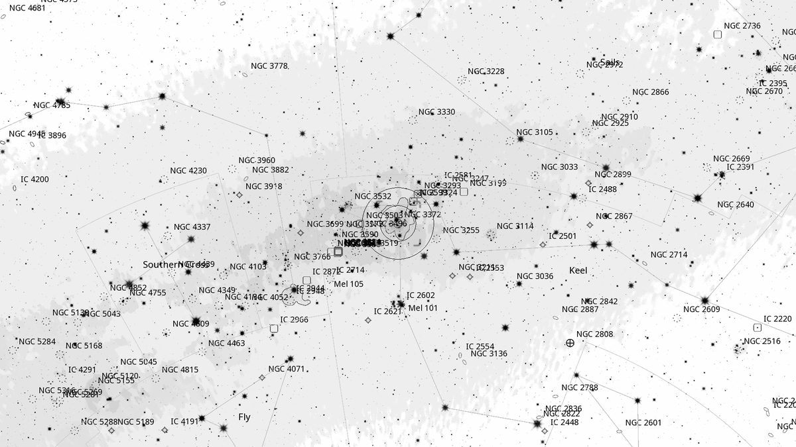
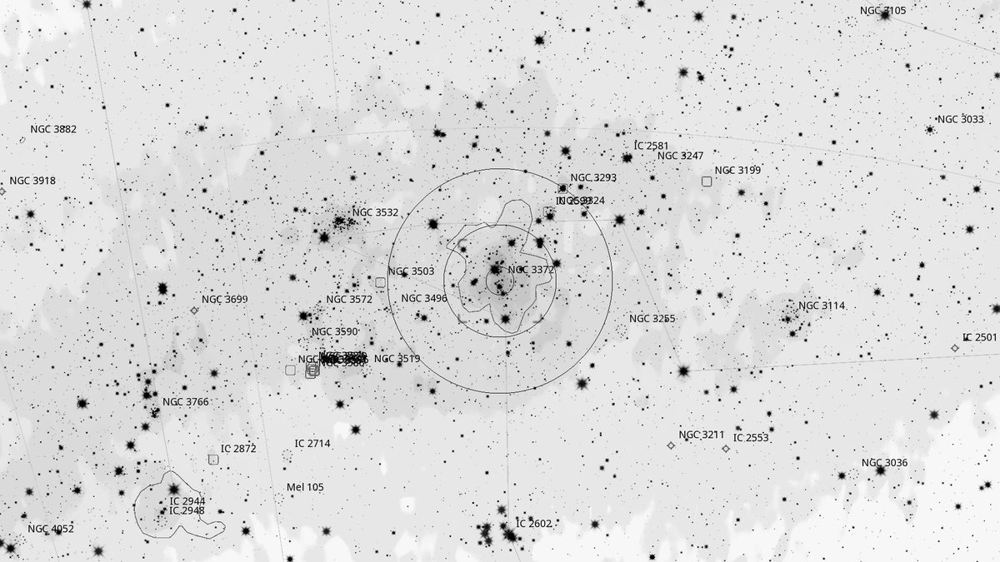
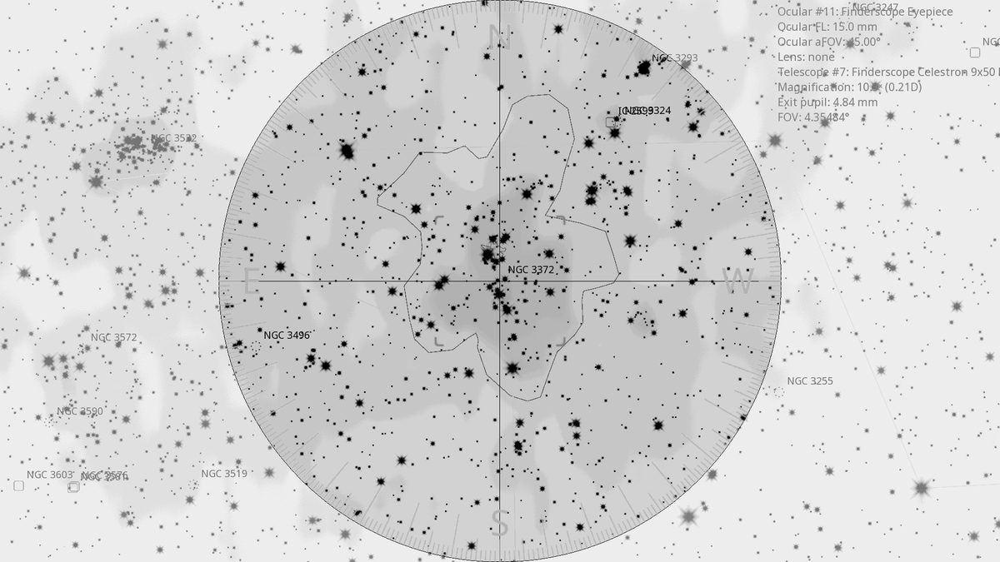
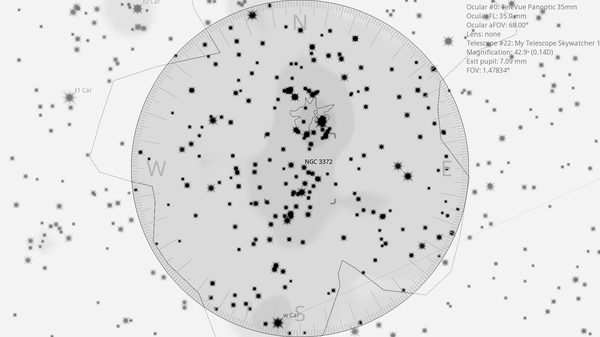

NGC 3372 (EN)
| R.A. | Dec. | Size | Mag | SB | Cnt.St | Type | Distance | Chart |
|---|---|---|---|---|---|---|---|---|
| 10h 44m 20.4s | -59° 53′ 38.2″ | 2.0° | 1.0 | 11.1 | EN | EN | -- | -- |

Background
NGC 3372 is the Carina Nebula — one of the largest and most spectacular emission nebulae in the sky, 7,500 light-years away and several hundred light-years across. It hosts η Carinae, an unstable luminous blue variable that famously underwent the “Great Eruption” in the 1840s. The bipolar Homunculus Nebula is the shell of ejecta from that event, expanding at 650 km/s.
My Observing Notes
55-cm (Club 22-inch f/5 Lord Sidious): A beautiful vista at low power; adding a UHC filter dials up the contrast of the surrounding nebulosity dramatically. The 22-inch's sliding filter rack (UHC / OIII / H-Beta in place) makes filter swaps effortless without descending the ladder. At higher magnification, focusing on η Car itself reveals the bulbous Homunculus — the dark lines marking the expanding bipolar shell are clear and well resolved. Triggered a vivid memory of seeing the same object through Mike Kerr's 25-inch Obsession 20 years ago, Pink Floyd playing in the distance.(11 April 2026)
25-cm (Meade 10-inch LX200, The Coffee Grinder): With the 26 mm the FOV captures a starry field with swirls of nebulosity intersected by dusty dark clouds. One of my favourite objects to drop into.(Friday, April 2025)
References
Charts



